Waveshare ESP32 display boards
78 boards – ESP32-C6, ESP32-P4, ESP32-S3, ESP32-S31. Filter and compare them in the interactive catalog →
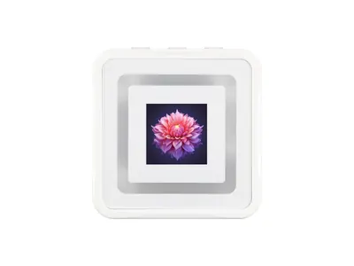
ESP32-C6-LCD-0.850.85" 128x128 IPS · ESP32-C6 · 8MB flash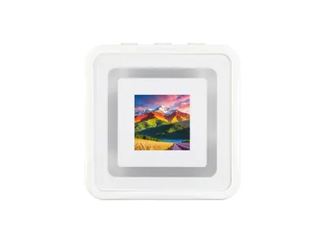
ESP32-S3-LCD-0.850.85" 128x128 IPS · ESP32-S3 · 8MB flash, 8MB PSRAM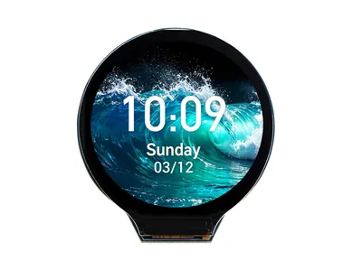
ESP32-C6-LCD-1.281.28" 240x240 IPS · ESP32-C6 · 16MB flash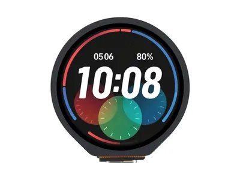
ESP32-C6-Touch-LCD-1.281.28" 240x240 IPS · ESP32-C6 · 16MB flash- ESP32-S3-DualEye-Touch-LCD-1.281.28" 240x240 Capacitive touch · ESP32-S3 · 16MB flash, 8MB PSRAM
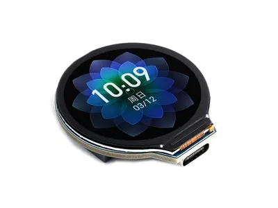
ESP32-S3-LCD-1.281.28" IPS · ESP32-S3 · 16MB flash, 2MB PSRAM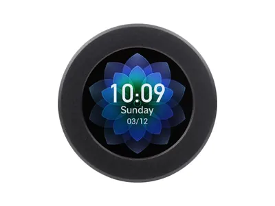
ESP32-S3-LCD-1.28-B1.28" IPS · ESP32-S3 · 16MB flash, 2MB PSRAM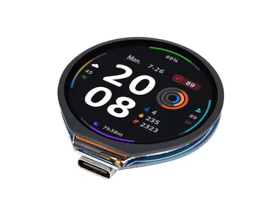
ESP32-S3-Touch-LCD-1.281.28" 240x240 Capacitive touch · ESP32-S3 · 16MB flash, 2MB PSRAM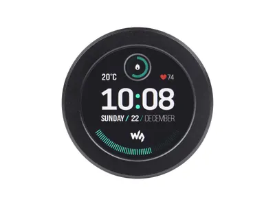
ESP32-S3-Touch-LCD-1.28-B1.28" Capacitive touch · ESP32-S3 · 16MB flash, 2MB PSRAM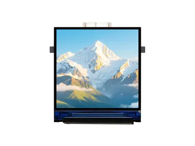
ESP32-C6-LCD-1.31.3" 240x240 IPS · ESP32-C6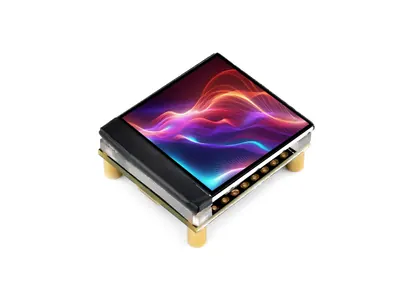
ESP32-S3-LCD-1.31.3" 240x240 · ESP32-S3 · 16MB flash, 8MB PSRAM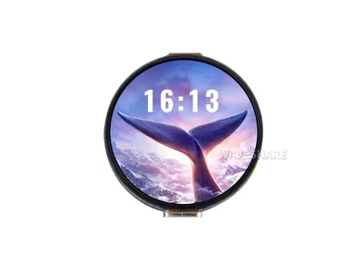
ESP32-S3-Touch-AMOLED-1.321.32" 466x466 AMOLED Capacitive touch · ESP32-S3 · 8MB flash, 8MB PSRAM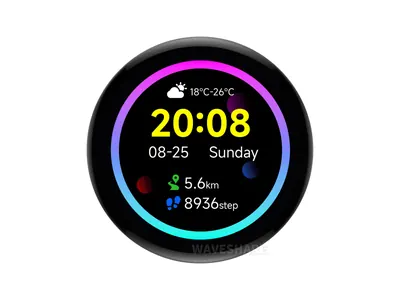
ESP32-S3-Touch-AMOLED-1.431.43" 466x466 AMOLED Capacitive touch · ESP32-S3 · 16MB flash, 8MB PSRAM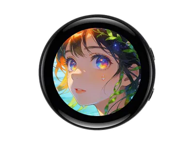
ESP32-S3-Touch-AMOLED-1.43C1.43" 466x466 AMOLED Capacitive touch · ESP32-S3 · 8MB flash, 8MB PSRAM- ESP32-S3-Touch-LCD-1.46B1.46" 412x412 · ESP32-S3 · 16MB flash, 8MB PSRAM
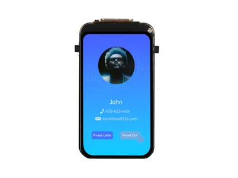
ESP32-C6-LCD-1.471.47" 172x320 · ESP32-C6 · 4MB flash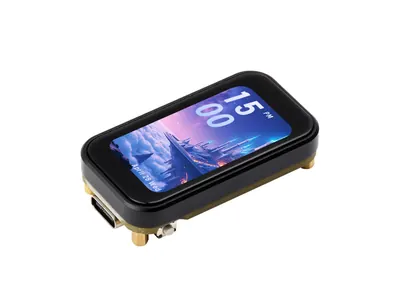
ESP32-C6-Touch-LCD-1.471.47" 172x320 IPS Capacitive touch · ESP32-C6 · 8MB flash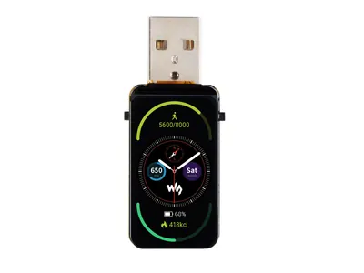
ESP32-S3-LCD-1.471.47" 172x320 · ESP32-S3 · 16MB flash, 8MB PSRAM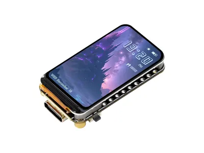
ESP32-S3-LCD-1.47B1.47" 172x320 IPS · ESP32-S3 · 16MB flash, 8MB PSRAM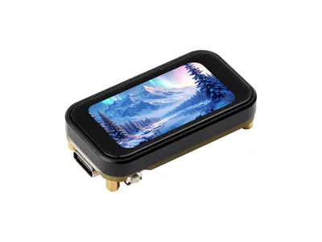
ESP32-S3-Touch-LCD-1.471.47" 172x320 IPS Capacitive touch · ESP32-S3 · 16MB flash, 8MB PSRAM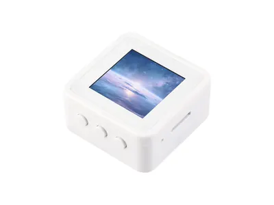
ESP32-C6-LCD-1.541.54" 240x240 IPS Capacitive touch · ESP32-C6 · 16MB flash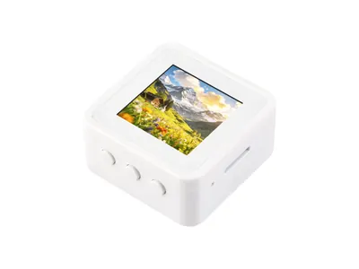
ESP32-S3-LCD-1.541.54" 240x240 IPS Capacitive touch · ESP32-S3 · 16MB flash, 8MB PSRAM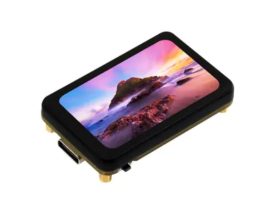
ESP32-S3-Touch-AMOLED-1.641.64" 280x456 AMOLED Capacitive touch · ESP32-S3 · 16MB flash, 8MB PSRAM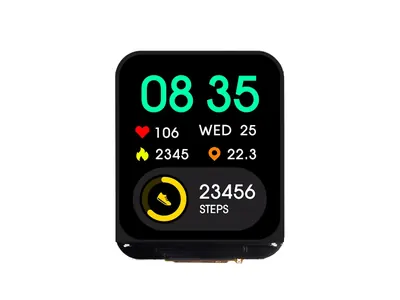
ESP32-C6-LCD-1.691.69" 240x280 IPS · ESP32-C6 · 16MB flash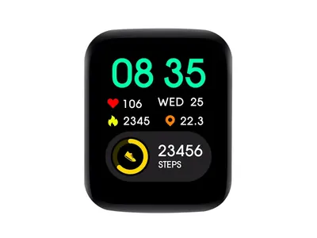
ESP32-C6-Touch-LCD-1.691.69" 240x280 IPS Capacitive touch · ESP32-C6 · 16MB flash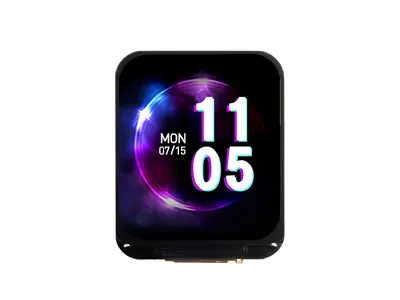
ESP32-S3-LCD-1.691.69" 240x280 · ESP32-S3 · 16MB flash, 8MB PSRAM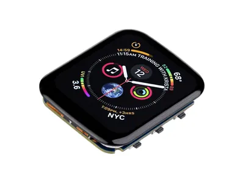
ESP32-S3-Touch-LCD-1.691.69" 240x280 Capacitive touch · ESP32-S3 · 16MB flash, 8MB PSRAM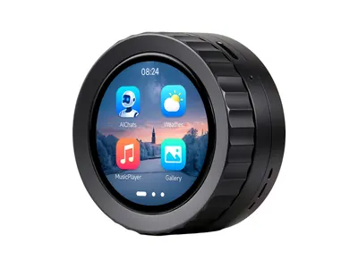
ESP32-P4-Knob-Touch-AMOLED-1.75B1.75" 466x466 AMOLED Capacitive touch · ESP32-P4 · 32MB flash, 32MB (in package) PSRAM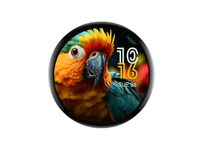
ESP32-S3-Touch-AMOLED-1.751.75" 466x466 AMOLED Capacitive touch · ESP32-S3 · 16MB flash, 8MB PSRAM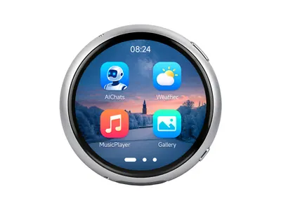
ESP32-S3-Touch-AMOLED-1.75C1.75" 466x466 AMOLED Capacitive touch · ESP32-S3 · 32MB flash, 8MB PSRAM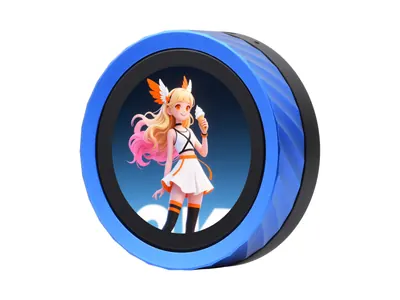
ESP32-S3-Knob-Touch-LCD-1.81.8" 360x360 IPS Capacitive touch · ESP32-S3 · 16MB flash, 8MB PSRAM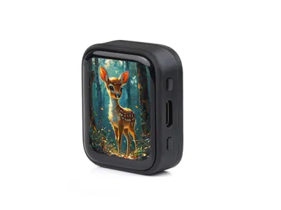
ESP32-S3-Touch-AMOLED-1.81.8" 368x448 AMOLED Capacitive touch · ESP32-S3 · 16MB flash, 8MB PSRAM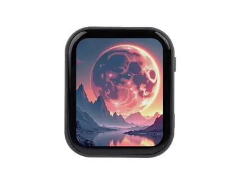
ESP32-C6-Touch-LCD-1.831.83" 240x284 IPS Capacitive touch · ESP32-C6 · 16MB flash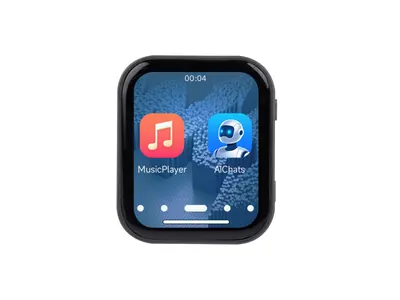
ESP32-S3-Touch-LCD-1.831.83" 240x284 IPS Capacitive touch · ESP32-S3 · 16MB flash, 8MB PSRAM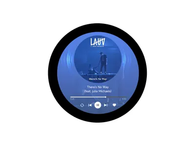
ESP32-S3-Touch-LCD-1.851.85" 360x360 Capacitive touch · ESP32-S3 · 16MB flash, 8MB PSRAM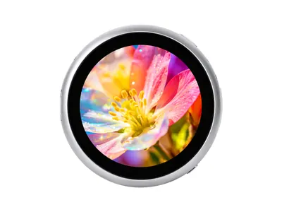
ESP32-S3-Touch-LCD-1.85B1.85" 360x360 LCD Capacitive touch · ESP32-S3 · 16MB flash, 8MB PSRAM- ESP32-S3-Touch-LCD-1.85C1.85" 360x360 Capacitive touch · ESP32-S3 · 16MB flash, 8MB PSRAM
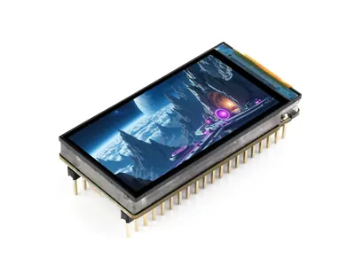
ESP32-C6-LCD-1.91.9" 170x320 LCD · ESP32-C6 · 8MB flash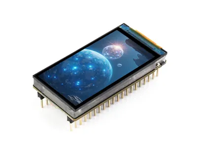
ESP32-S3-LCD-1.91.9" 170x320 LCD · ESP32-S3 · 16MB flash, 8MB PSRAM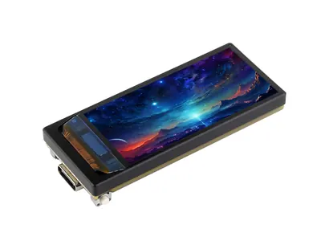
ESP32-S3-AMOLED-1.911.91" 240x536 AMOLED · ESP32-S3 · 16MB flash, 8MB PSRAM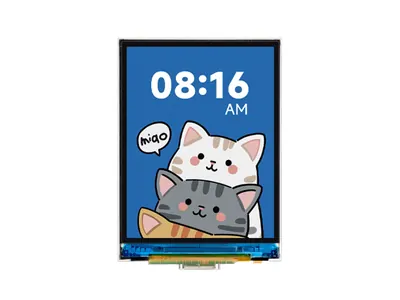
ESP32-S3-LCD-22" 240x320 IPS LCD · ESP32-S3 · 16MB flash, 8MB PSRAM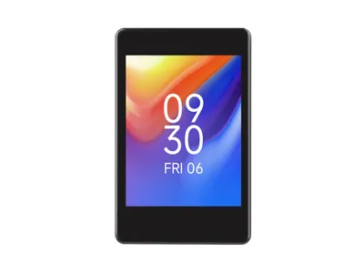
ESP32-S3-Touch-LCD-22" 240x320 IPS LCD Capacitive touch · ESP32-S3 · 16MB flash, 8MB PSRAM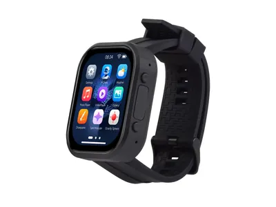
ESP32-S3-Touch-AMOLED-2.062.06" 410x502 AMOLED Capacitive touch · ESP32-S3 · 32MB flash, 8MB PSRAM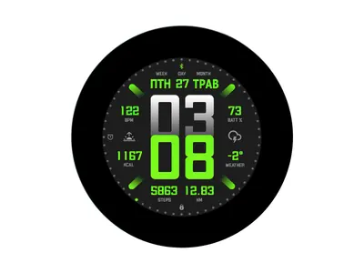
ESP32-S3-Touch-LCD-2.12.1" 480x480 IPS Capacitive touch · ESP32-S3 · 16MB flash, 8MB PSRAM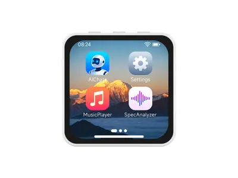
ESP32-S3-Touch-AMOLED-2.162.16" 480x480 AMOLED Capacitive touch · ESP32-S3 · 16MB flash, 8MB PSRAM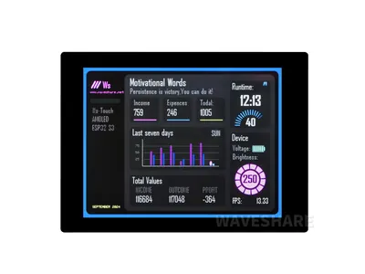
ESP32-S3-Touch-AMOLED-2.412.41" 600x450 AMOLED Capacitive touch · ESP32-S3 · 16MB flash, 8MB PSRAM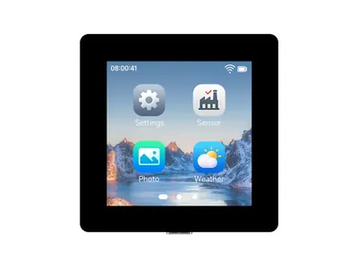
ESP32-C6-LCD-2.732.73" 320x320 LCD · ESP32-C6 · 16MB flash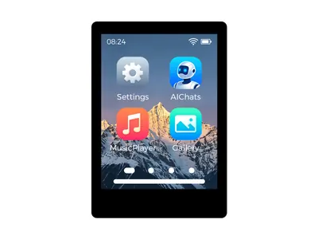
ESP32-C6-Touch-LCD-2.82.8" 240x320 IPS Capacitive touch · ESP32-C6 · 16MB flash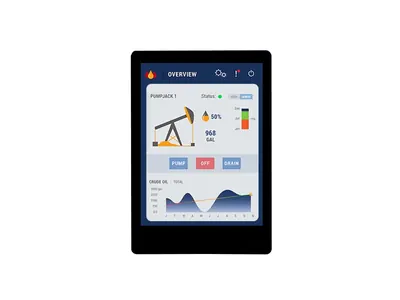
ESP32-S3-Touch-LCD-2.82.8" 240x320 Capacitive touch · ESP32-S3 · 16MB flash, 8MB PSRAM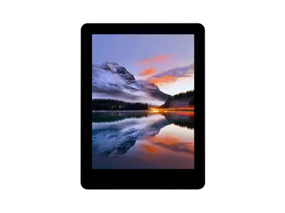
ESP32-S3-Touch-LCD-2.8B2.8" 480x640 IPS LCD · ESP32-S3 · 16MB flash, 8MB PSRAM- ESP32-S3-Touch-LCD-2.8C2.8" 480x480 IPS · ESP32-S3 · 16MB flash, 8MB PSRAM
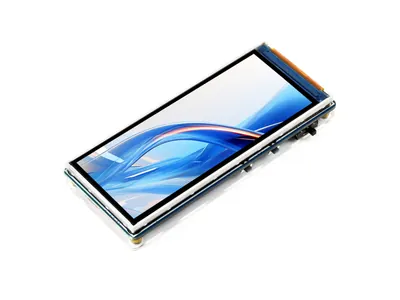
ESP32-S3-LCD-3.163.16" 320x820 LCD · ESP32-S3 · 16MB flash, 8MB PSRAM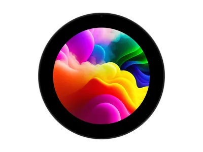
ESP32-P4-WIFI6-Touch-LCD-3.4C3.4" 800x800 IPS Capacitive touch · ESP32-P4 · 32MB NOR flash, 32MB (in package) PSRAM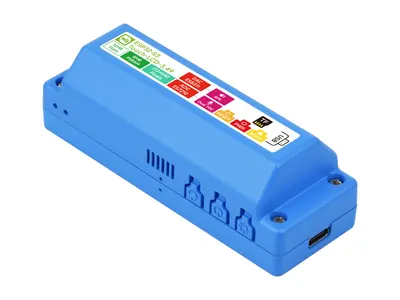
ESP32-S3-Touch-LCD-3.493.49" 172x640 LCD Capacitive touch · ESP32-S3 · 16MB flash, 8MB PSRAM- ESP32-P4-WIFI6-Touch-LCD-3.53.5" 320x480 IPS Capacitive touch · ESP32-P4 · 16MB flash, 32MB (in package) PSRAM
- ESP32-S3-Touch-LCD-3.53.5" 320x480 IPS Capacitive touch · ESP32-S3 · 16MB flash, 8MB PSRAM
- ESP32-S3-Touch-LCD-3.5B3.5" 320x480 IPS Capacitive touch · ESP32-S3 · 16MB flash, 8MB PSRAM
- ESP32-P4-WIFI6-Touch-LCD-4B4.0" 720x720 IPS Capacitive touch · ESP32-P4 · 32MB flash, 32MB (in package) PSRAM
- ESP32-P4-WIFI6-Touch-LCD-4C4" 720x720 IPS Capacitive touch · ESP32-P4 · 32MB NOR flash, 32MB (in package) PSRAM
- ESP32-S3-Touch-LCD-44" 480x480 Capacitive touch · ESP32-S3 · 16MB flash, 8MB PSRAM
- ESP32-S3-Touch-LCD-4B4" 480x480 Capacitive touch · ESP32-S3 · 16MB flash, 8MB PSRAM
- ESP32-S3-RLCD-4.24.2" 300x400 RLCD · ESP32-S3 · 16MB flash, 8MB PSRAM
- ESP32-P4-WIFI6-Touch-LCD-4.34.3" 480x800 IPS Capacitive touch · ESP32-P4 · 32MB flash, 32MB (in package) PSRAM
- ESP32-S3-Touch-LCD-4.34.3" 800x480 Capacitive touch · ESP32-S3 · 16MB flash, 8MB PSRAM
- ESP32-S3-Touch-LCD-4.3B4.3" 800x480 Capacitive touch · ESP32-S3 · 16MB flash, 8MB PSRAM
- ESP32-S3-Touch-LCD-4.3C4.3" 800x480 Capacitive touch · ESP32-S3 · 16MB flash, 8MB PSRAM
- ESP32-S31-Touch-LCD-4.3C4.3" Capacitive touch · ESP32-S31 · 16MB flash, 16MB PSRAM
- ESP32-P4-WIFI6-Touch-LCD-55.0" 720x1280 IPS Capacitive touch · ESP32-P4 · 32MB flash, 32MB (in package) PSRAM
- ESP32-S3-Touch-LCD-55" Capacitive touch · ESP32-S3 · 16MB flash, 8MB PSRAM
- ESP32-P4-Module-DEV-KIT-B7" 720x1280 IPS Capacitive touch · ESP32-P4 · 16MB NOR (on module) flash, 32MB (in package) PSRAM
- ESP32-P4-WIFI6-Touch-LCD-77" 720x1280 IPS Capacitive touch · ESP32-P4 · 32MB NOR flash, 32MB (in package) PSRAM
- ESP32-P4-WIFI6-Touch-LCD-7B7.0" 1024x600 IPS Capacitive touch · ESP32-P4 · 32MB flash, 32MB (in package) PSRAM
- ESP32-S3-LCD-7B7" 1024x600 Capacitive touch · ESP32-S3 · 16MB flash, 8MB PSRAM
- ESP32-S3-Touch-LCD-77.0" 800x480 Capacitive touch · ESP32-S3 · 16MB flash, 8MB PSRAM
- ESP32-S3-Touch-LCD-7C-BOX7" 800x480 Capacitive touch · ESP32-S3 · 32MB flash, 16MB PSRAM
- ESP32-P4-WIFI6-Touch-LCD-88" 800x1280 IPS Capacitive touch · ESP32-P4 · 32MB NOR flash, 32MB (in package) PSRAM
- ESP32-P4-Module-DEV-KIT-C10.1" 800x1280 IPS Capacitive touch · ESP32-P4 · 16MB NOR (on module) flash, 32MB (in package) PSRAM
- ESP32-P4-WIFI6-Touch-LCD-10.110.1" 800x1280 IPS Capacitive touch · ESP32-P4 · 32MB NOR flash, 32MB (in package) PSRAM